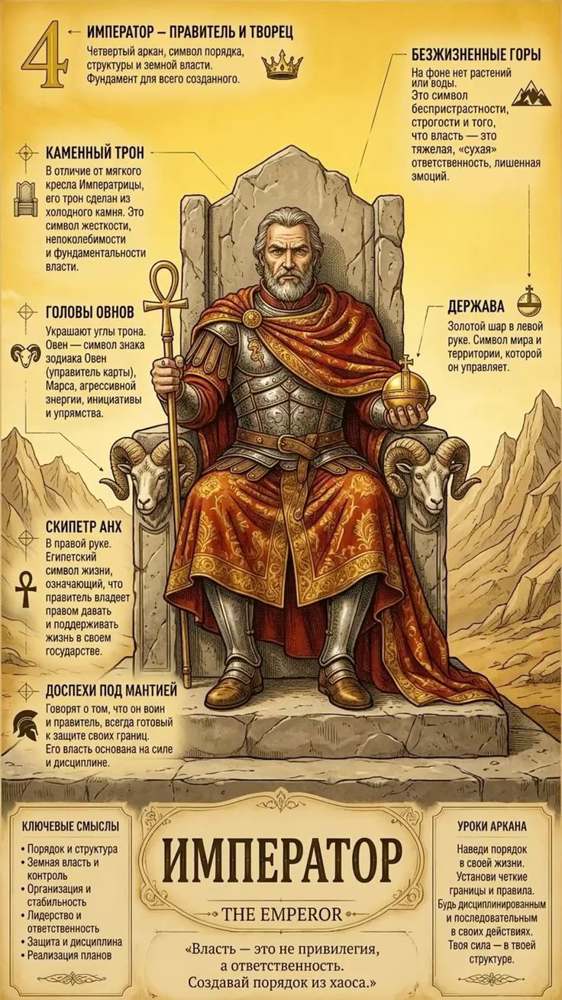

СЕРДЕЧНЫЕ ДЕЛА
4 Аркан в любви и отношениях
Опора и каменная стена для семьи. Требует уважения к своему авторитету. Важно избегать превращения дома в казарму.

4 аркан — энергия непоколебимой структуры, порядка, дисциплины и мужской силы. Обладатели 4 аркана способны построить устойчивую систему из любого хаоса и нести ответственность за большие коллективы.
Опора и каменная стена для семьи. Требует уважения к своему авторитету. Важно избегать превращения дома в казарму.
Крупный бизнес, госуправление, строительство, производство, правоохранительные органы, топ-менеджмент. Деньги любят структуру и учет.
Научись делегировать и проявлять гибкость. Настоящая власть держится не на страхе, а на уважении и справедливости.
ОТВЕТЫ НА ВОПРОСЫ
Женщинам 4 аркан дает сильный характер и деловую хватку, но в личной жизни важно научиться мягкости, чтобы не подавлять мужчину.
Проработать отношения с отцом, заниматься спортом и регулярно отдыхать от управления.
Введи дату своего рождения, и наш движок рассчитает все 10 арканов матрицы личности, кармический хвост и знак зодиака за секунду.